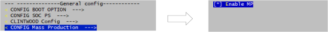
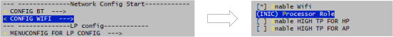
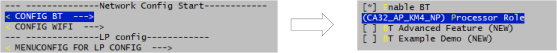

Introduction
The MP image is used for Wi-Fi & BT performance verification and Wi-Fi & BT parameters calibration in massive production. This chapter mainly illustrates how to build and use the MP image.
Refer to WS_RTL8730E_MP_FLOW_RTOS.pdf for more details about MP flow.
How to Build MP Image
The steps of building MP image are depicted below:
Navigate to work directory
{SDK}\amebasmart_gcc_project.Type command
make menuconfigto modify the configurations.Enable MP

Enable Wi-Fi, and configure CA32 as AP core and KM4 as NP core.

Enable BT, and configure CA32 as AP core and KM4 as NP core.

Save and exit the menuconfig.
Type command
make allto rebuild all projects.
{kind=link}
{kind=link}
{kind=link}
The MP image km0_km4_ca32_app_mp.bin will be generated in {SDK}\amebasmart_gcc_project and all the images releated to the MP image can be found in the paths below:
{SDK}\amebasmart_gcc_project\project_lp\asdk\image_mp
{SDK}\amebasmart_gcc_project\project_hp\asdk\image_mp
{SDK}\amebasmart_gcc_project\project_ap\asdk\image_mp
How to Combine Images
Before downloading images into the chip, the MP image needs to be combined with normal image. In massive production, the MP image is used to calibrate the parameters first. After calibration, you can use the command illustrated in Section 1.4 to switch to the normal image and boot from it. Since the chip boots from OTA1 by default when both OTA1 and OTA2 images are valid and with the same version number, the MP image should be located in the OTA1 field.
The steps of combining images are decipted below:
Check if both the normal image and MP image are valid.
Use
Ameba_1-10_MP_ImageTool_Linuxto combine all the images, includingkm4_boot_all.bin,km0_km4_ca32_app_mp.bin, andkm0_km4_ca32_app.bin, which are generated in{SDK}\amebasmart_gcc_project.Set the highlight image offset according to the Flash layout, which can be found in
{SDK}\component\soc\amebasmart\usrcfg\ameba_flashcfg.c.Set
km0_km4_ca32_app_mp.bininIMG_APP_OTA1sectionSet
km0_km4_ca32_app.bininIMG_APP_OTA2section
/* * @brif Nor Flash layout is set according to Nor Flash Layout in User Manual * In each entry, the first item is flash regoin type, the second item is start address, the second item is end address */ FlashLayoutInfo_TypeDef Flash_Layout_Nor[] = { /*Region_Type, [StartAddr, EndAddr] */ {IMG_BOOT, 0x08000000, 0x0801FFFF}, //Boot Manifest(4K) + KM4 Bootloader(124K) //Users should modify below according to their own memory {IMG_APP_OTA1, 0x08020000, 0x082FFFFF}, //Certificate(4K) + Manifest(4K) + KR4 & KM4 Application OTA1 + Manifest(4K) + RDP IMG OTA1 // + AP IMG OTA1 {IMG_BOOT_OTA2, 0x08300000, 0x0833FFFF}, //Boot Manifest(4K) + KM4 Bootloader(252K) OTA {IMG_APP_OTA2, 0x08340000, 0x0861FFFF}, //Certificate(4K) + Manifest(4K) + KR4 & KM4 Application OTA2 + Manifest(4K) + RDP IMG OTA2 // + AP IMG OTA2 {FTL, 0x08620000, 0x08622FFF}, //FTL for BT(>=12K), The start offset of flash pages which is allocated to FTL physical map. {VFS1, 0x08623000, 0x08642FFF}, //VFS region 1 (128K) {VFS2, 0xFFFFFFFF, 0xFFFFFFFF}, //VFS region 2 {USER, 0xFFFFFFFF, 0xFFFFFFFF}, //reserve for user /* End */ {0xFF, 0xFFFFFFFF, 0xFFFFFFFF}, };
Execute the command and save the combined image named
Image_All.bin.sudo ./Ameba_1-10_MP_ImageTool_Linux -combine km4_boot_all.bin 0x0000 km0_km4_ca32_app_mp.bin 0x20000 km0_km4_ca32_app.bin 0x340000
Download the
Image_All.bininto the device after the combination is finished.
Note
The normal image km0_km4_ca32_app.bin is built with MP disabled. Check the normal image in {SDK}\amebasmart_gcc_project.
All the images related to normal image can be found in paths below:
{SDK}\amebasmart_gcc_project\project_lp\asdk\image
{SDK}\amebasmart_gcc_project\project_hp\asdk\image
{SDK}\amebasmart_gcc_project\project_ap\asdk\image
Boot Flow
Reset the device after downloading image finished.
Check if the device boots from MP image successfully.
[BOOT-I] IMG2(OTA1) VALID, ret: 1 [BOOT-I] IMG2 BOOT from OTA 1, Version: 1.1 [BOOT-I] IMG2 BOOT from OTA 1 [BOOT-I] Start NonSecure @ 0x60002049 ... [APP-I] KM4 APP_START ... interface 0 is initialized interface 1 is initialized [WLAN-A] Init WIFI [WLAN-A] Band=2.4G&5G [WLAN-A] MP driver [WLAN-A] NP consume heap 48888 [WLAN-I] AP consume heap 27192 [WLAN-I] _init_thread(74), Available heap 3493056 [WLAN-A] IPS in
Start the massive production flow if the device boots from MP image successfully.
How to Switch Image
When MP is finished, you need to switch the image from MP image to the normal image to verify the application.
Type command
AT+OTACLEARfrom serial terminal to clear the signature of MP image in order to assign the MP image invalid.[16:41:35:731]AT+OTACLEAR [16:41:35:731][SYS-A] [sys_clear_ota_signature] IMGID: 1, current OTA1 Address: 0x00020000, target OTA2 Address: 0x00340000 [16:41:35:731] [16:41:35:731]+OTACLEAR:OK [16:41:35:731] [16:41:35:732][MEM] After do cmd, available heap 318976
Reset the device, the device will boot from the normal image located in OTA2 field.
[BOOT-I] IMG2(OTA2) VALID, ret: 1 [BOOT-I] IMG2 BOOT from OTA 2, Version: 1.1 [BOOT-I] IMG2 BOOT from OTA 2 [BOOT-I] Start NonSecure @ 0x60002049 ... [APP-I] KM4 APP_START ...
Note
Only NOR Flash is supported now.